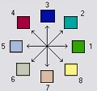

Summary
Creates 3 grids that contain for each grid cell: 1) the longest path, 2) the total path, and 3) the Strahler order number. These values are derived from the network defined by the D8 flow model.
The longest upslope length is the length of the flow path from the furthest cell that drains to each cell. The total upslope path length is the length of the entire grid network upslope of each grid cell. Lengths are measured between cell centers taking into account cell size and whether the direction is adjacent or diagonal.
Strahler order is defined as follows: A network of flow paths is defined by the D8 Flow Direction grid. Source flow paths have a Strahler order number of one. When two flow paths of different order join the order of the downstream flow path is the order of the highest incoming flow path. When two flow paths of equal order join the downstream flow path order is increased by 1. When more than two flow paths join the downstream flow path order is calculated as the maximum of the highest incoming flow path order or the second highest incoming flow path order + 1. This generalizes the common definition to cases where more than two flow paths join at a point.
Where the optional mask grid and threshold value are input, the function is evaluated only considering grid cells that lie in the domain with mask grid value greater than or equal to the threshold value. Source (first order) grid cells are taken as those that do not have any other grid cells from inside the domain draining in to them, and only when two of these flow paths join is order propagated according to the ordering rules. Lengths are also only evaluated counting paths within the domain greater than or equal to the threshold.
If the optional outlet point is used, only the outlet cells and the cells upslope (by the D8 flow model) of them are in the domain to be evaluated.
Illustration

Usage
Command Prompt Syntax:
mpiexec -n <number of processes> Gridnet
-p <pfile>
-plen <plenfile>
-tlen <tlenfile>
-gord <gordfile>
[-o <outletfile>]
[-lyrname <layer name>]
[-lyrno <layer number>]
[-mask <maskfile> [-thresh <threshold>]]
Parameters:
- pfile: D8 flow directions input file
- plenfile: grid of longest flow length upstream of each point output file
- tlenfile: grid of total path length upstream of each point output file
- gordfile: grid of strahler order output file
- outletfile: input outlets file (OGR readable dataset)
- layer name: OGR layer name if outlets are not the first layer in outletfile (optional)
- layer number: OGR layer number if outlets are not the first layer in outletfile (optional)
- maskfile: mask file (optional)
- threshold: Where a maskfile is input, there is an additional option to specify a threshold. This has to be immediately following the maskfile on the argument list. The grid network is evaluated for grid cells where values of the maskfile grid read as 4 byte integers are >= threshold.
Note: Layer name and layer number should not both be specified.
ArcGIS Geoprocessing Syntax
GridNetwork (Input_D8_Flow_Direction_Grid, Input_Number_of_Processes, {Input_Outlets}, {Input_Mask_Grid}, {Input_Mask_Threshold_Value}, Output_Strahler_Network_Order_Grid, Output_Longest_Upslope_Length_Grid, Output_Total_Upslope_Length_Grid)
Note: When ArcGIS Geoprocessing is used, some of the OGR layer name and layer number functionality may not be available and it is unknown whether this will work for outletfile anything other than a shapefile.
| Parameter | Explanation | Data Type |
|---|---|---|
| Input_D8_Flow_Direction_Grid |
Dialog Reference A grid of D8 flow directions which are defined, for each cell, as the direction of the one of its eight adjacent or diagonal neighbors with the steepest downward slope. There is no python reference for this parameter. |
Raster Layer |
| Input_Number_of_Processes |
Dialog Reference The number of stripes that the domain will be divided into and the number of MPI parallel processes that will be spawned to evaluate each of the stripes. There is no python reference for this parameter. |
Long |
| Input_Outlets (Optional) |
Dialog Reference A point feature defining the outlets of interest. If this input feature is used, only the cells upslope of these outlet cells are considered to be within the domain being evaluated. There is no python reference for this parameter. |
Feature Layer |
| Input_Mask_Grid (Optional) |
Dialog Reference A grid that is used to determine the domain do be analyzed. If the mask grid value >= mask threshold, then the cell will be included in the domain. While this tool does not have an edge contamination flag, if edge contamination analysis is needed, then a mask grid from a function like AreaD8 that does support edge contamination can be used to achieve the same result. There is no python reference for this parameter. |
Raster Layer |
| Input_Mask_Threshold_Value (Optional) |
Dialog Reference This input parameter is used in the calculation mask grid value >= mask threshold to determine if the grid cell is in the domain to be analyzed. There is no python reference for this parameter. |
Double |
| Output_Strahler_Network_Order_Grid |
Dialog Reference A grid giving the Strahler order number for each cell. A network of flow paths is defined by the D8 Flow Direction grid. Source flow paths have a Strahler order number of one. When two flow paths of different order join the order of the downstream flow path is the order of the highest incoming flow path. When two flow paths of equal order join the downstream flow path order is increased by 1. When more than two flow paths join the downstream flow path order is calculated as the maximum of the highest incoming flow path order or the second highest incoming flow path order + 1. This generalizes the common definition to cases where more than two flow paths join at a point. There is no python reference for this parameter. |
Raster Dataset |
| Output_Longest_Upslope_Length_Grid |
Dialog Reference A grid that gives the length of the longest upslope D8 flow path terminating at each grid cell. Lengths are measured between cell centers taking into account cell size and whether the direction is adjacent or diagonal. There is no python reference for this parameter. |
Raster Dataset |
| Output_Total_Upslope_Length_Grid |
Dialog Reference The total upslope path length is the length of the entire D8 flow grid network upslope of each grid cell. Lengths are measured between cell centers taking into account cell size and whether the direction is adjacent or diagonal. There is no python reference for this parameter. |
Raster Dataset |
Code Samples
There are no code samples for this tool.
Tags
There are no tags for this item.
Credits
There are no credits for this item.
Use limitations
There are no use limitations for this item.